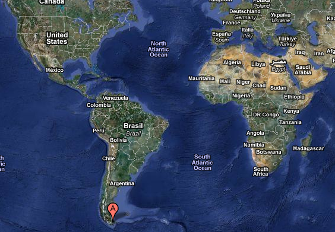
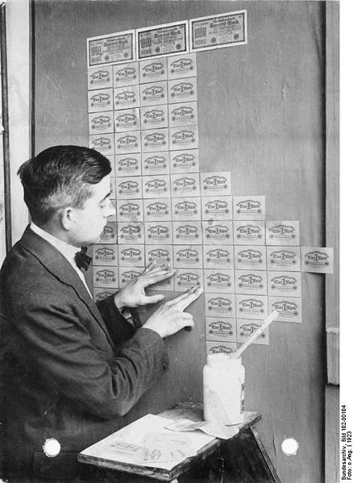
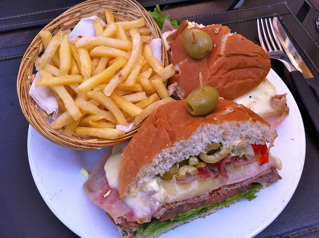
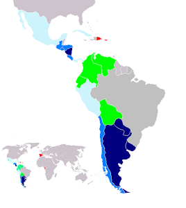
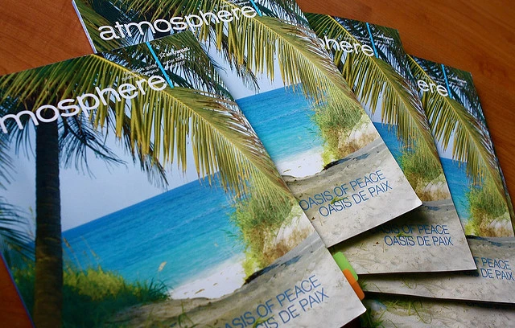
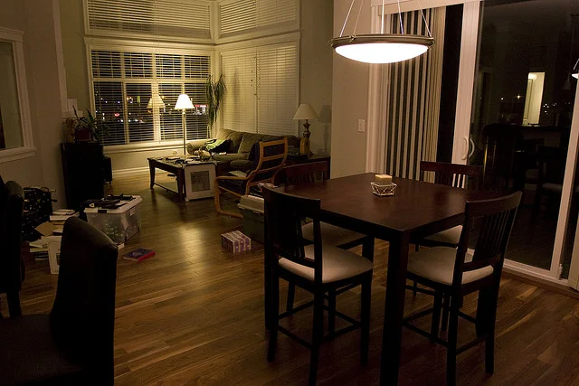
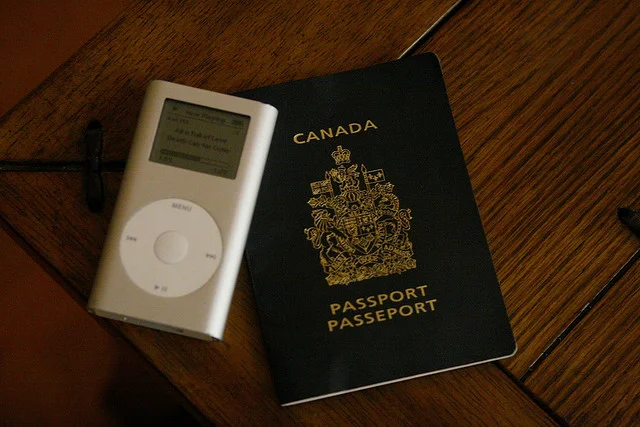

We're only about two month's away from the US hitting its debt ceiling of 14.3 trillion dollars. Congressionally the US isn't allowed to borrow any more than that amount (the entire wealth of the population of the planet is around 100 trillion dollars - so that means the US owes almost 15% of the entire wealth of the planet in debt).
The estimated date of this occurring is sometime in late April of this year I believe. When it does, the US has two options: default on some of their debt obligati...

Well, I just did it - I booked a trip to Ushuaia, Argentina, the southern most city on the entire planet. I was originally going to go to Machu Picchu during that time slot, but once I learned that the southern most Irish pub in the world was in Ushuaia and that St. Patrick's Day would align with the day I arrived, the decision became easy.
As you can see from the above map, Ushuaia is about as far south as you can get on the planet, other than Antarctica of course. In fact, many of the ships t...
Hard to believe, but at this time about a month ago I was boarding a plane in Vancouver to start my big adventure. I was trying to remember my flight down here, and other than a few moments in the airport and on the plane, I don't really recall too much of it. Truthfully it seems like a very long time ago already.
I've been in Buenos Aires now for 30 days, and have seen quite a bit of it. A month ago I didn't know how to do laundry, didn't have a phone here, wasn't able to order food in a resta...

It's no secret that most of the organized governments in the world are essentially broke. The current debt to GDP ratio in the United States is almost 100%, a fairly incredible number that continues to rise. That number alone indicates that the US is in poor financial shape, and it's not even that accurate a number. For example, the US has a number of off budget items that are technically debt as well - all the Freddy May and Fannie Mac purchases, Social Security (the US has been taking the mone...
For whatever reason, people keep acting like the only way to do what I'm doing is to be filthy rich. That is the myth I mentioned in my other post about world travel only being attainable for millionaires. Tim Ferris has a great example in his book about some actor saying if he won a million dollars he would take a few months off and motorcycle around Thailand - Tim's point is that you can do that for probably a few thousand dollars, so no need to gamble that experience on the lottery, just sav...

Last night I casually asked on Twitter if people reading this website would like me to blog more about food. Surprisingly the response I receive was the most vocal and energetic of all the things I've asked or done so far, so apparently my followers like to eat. So, going forward I'm going to try and write about all the unique foods or food related experiences I have while on my trip.
A few weeks ago I had mentioned to my spanish teacher that I was heading to Uruguay. Upon hearing that, she imme...
I don't know why, but I'm excited that it's a new month. Maybe because I'm fully booked for my trip to Igauza falls in 17 days, or possibly because it's a trip to Machu Picchu is probably on the horizon. Either way, I'm feeling fine, and today is a new day in a new month.
I left Vancouver on January 4th, so that means I've been here nearly a month now. Time flies. I have a little widget on my phone with my rough itinerary in it, and it says I have 57 days left in Buenos Aires. I fly out on March...
I tried purchasing an application tonight in iTunes, and received the following error:
For Google's benefit: "Please contact iTunes support to complete this transaction".
I tried again and again with the same results. Afterwards I tried from my computer and got the same cryptic error message.
I contacted Apple iTunes support tonight, and here was their response:
Welcome to iTunes Store Customer support. I am Chandan.
I understand that you are not able to make purchases from your Account. I wil...
As most people on Twitter now know, a dogsledding company in Whistler has recently admitted that it killed 100 of its dogs after demand was less than anticipated after the winter olympics. Instead of euthanizing these animals, allegedly some employee was given the task of killing these animals one by one and then burying them, some apparently while still alive.
Obviously this act is causing a lot of people to be upset. I personally think it's an extreme form of cruelty, and that the company and ...
I've spent the last month taking in the sites in Buenos Aires, and am now starting to make plans for viewing a few sites outside of the city. The first location I'm probably going to visit is Iguazu Falls. If you are planning a trip to Iguazu Falls, then this post is for you.
Iguazu Falls
Iguazu Falls is a massive set of cascading waterfalls right on the border between Argentina and Brazil. People who have seen them say it's one of the most impressive natural wonders in the world, and it's somet...
I'm one month into what could very well be a one year travel adventure, potentially longer, depending on how things go (don't worry mom, I'll come home for a visit). My plan has always been to give monthly updates on costs to help those people budgeting for trips such as these.
I've been told that one of the greatest myths about world travel is the belief that it's only within reach of those who are very rich. My goal over the next year is to help dispel some of those myths. While I'm not expec...
I've gone through various mutual fund companies and financial planners over the years, but ultimately decided last year to take my finances into my own hands and manage my own portfolio.
My main issue with the financial planning/advice market is that there is an inherent conflict of interest in most of the advice given out. Yes, a par-life plan may in fact be a great investment vehicle, but when your purchase of one results in a $1,000 bonus for the financial planner, how can anyone ever be sur...
I've been here three weeks now, and have most of the basics figured out. But definitely one of the hardest problems I've had to solve in Argentina so far was how to get a SIM card in Buenos Aires and ultimately top it up with funds.
Why Movistar?
There are two large GSM cell carriers in Buenos Aires: Claro and Movistar. Having investigated them both prior to moving to Buenos Aires, I came to the conclusion that Movistar offered the best deal for pay as you go plans.
First, why Pay As You Go? Unf...
So, I've been in Buenos Aires a little over three weeks now. This last week was pretty uneventful, as I've been working quite a bit and also spending six hours a week in Spanish lessons.
Truthfully, I'm probably going to scale the lessons back here shortly, as I'm finding it pretty hard to fit them in and still have time to get out and enjoy the city. So I may scale back to two nights a week, or possibly even one. I also hadn't explicitly budgeted for Spanish lessons, so I don't want to use up a...
This was one of the things I was afraid of. About six months ago I decided to sell off most of my camera gear. Part of that decision was due to the fact that if I was going to go on this trip I would need more money, and my camera gear represented a significant investment ($5,000+) that I could tap into. I could always buy another camera, but I may not always be able to do a trip like this. The second was that I was originally planning on traveling with just a backpack, and there really wouldn't...
One of the things I've come to realize over the last year is that in most cases, debt is horrible thing. Granted, many businesses look towards debt as a way to fund capital purchases in their beginning stages, and I have no problem with small business loans. But all the other debt that people are addicted to is ultimately bad for the economy in general.
There are many people who believe that the reason housing prices are skyrocketing in North America, as well as education costs, is due to the av...
About a week ago, Gus, Russ and I were talking about how we would all like to visit Uruguay at some point on our adventure. There are two options that most people consider: a trip to Colonia, or a trip to Montevideo.
Due to time constraints, most people end up taking the trip to Colonia, since it's not very far from Buenos Aires. Getting to Montevideo takes more time, and is generally more expensive, so most people choose not to do it. Since it is the capital of Uruguay, we decided that it was ...
I have a lot to write about this week, but was in front of the computer so I recorded another quick and dirty video regarding the weekend. Enjoy.
Video Update 2: Thoughts on Montevideo from Duane Storey on Vimeo....
Here's a little video update from Buenos Aires using Photobooth. Not entirely sure why I was doing the Stevie Wonder while it was going on, but whatever. I also said my Spanish lessons are $90/month, when they are more like $90/week. But, enjoy! If people like these kind of updates I'll try and do more of them.
Video Update: Day 16 in Buenos Aires from Duane Storey on Vimeo....
I've managed to do a weekly update on the past two Fridays of the month, so I think going forward that's going to by my goal for the rest of the trip.
First off, I've been here a little over two weeks now. The total length of my time in Buenos Aires is about 12 weeks, so that means I have around 10 left I think. My first week here was a bit challenging, mostly for the language barrier. I spent a bit of time brushing up on my spanish, and week 2 definitely was a bit easier.
Spanish
This week I fi...
A few years ago, the government opened up a new investment vehicle for people looking to save for retirement, the tax free savings account (TFSA).
An RRSP is effectively a tax-deferred investment account. When you contribute to it, you are doing so out of pre-tax dollars (or, if you get a tax refund due to your contribution, you are getting the tax you paid on that amount back). Eventually you have to pay the piper, so when you start pulling money out of your RRSP to fund retirement, you will pa...
The country of Uruguay is just a short ferry ride away from Buenos Aires. It's always been on my list of things to see while I'm down in Argentina, but I didn't have any definite plans in my mind for when I would go over.
Usually people go over to Colonia del Sacramento in Uruguay, since it's just a short ferry ride away. However, an even greater adventure is the city of Montevideo, which is at least a 2.5 hour ferry ride away from Buenos Aires (if you take the fast ferry, longer if you take th...
I came to Buenos Aires with an iPad, a Macbook Pro, a Canon DLSR, a 28mm lens, a Kodak Playsport HD camera, and a Canon something or other point and shoot camera - quite the load. Here's a little update on how it's going.
The Good
The iPad is great for reading at home, but it's not so good for reading out in public in a city with a lot of petty crime. In fact, I don't think I've seen a single iPad down here since I've arrived. As a result, I'm thankful I brought my Kindle with me, since it blen...
This last weekend I had the opportunity to visit the world renowned Japanese Gardens in Buenos Aires. Outside of Japan, they are some of the largest Japanese Gardens in the world, and I have been looking forward to visiting them ever since I arrived.
The Japanese Gardens are located in Buenos Aires, just north of the Palermo area and the Buenos Aires zoo. I walked there from my apartment near Paraguay and Gurrachuga, and it took me about 30 minutes or so to get there.
This was the first real tr...
Well, it was bound to happen sooner or later. At some level I'm almost relieved that it's out of the way. Somehow yours truly lost his bank card today.
I made two trips to the bank today, one to HSBC near Alto Palermo and one to CitiBank. At HSBC I took out 1000 pesos and at CitiBank I did the same. I made it back home, did some work, then went to a little coffee shop where I read for an hour or so.
When I got home from there I opened my wallet, and was surprised that my bank card wasn't in it....
Well, it's been 9 days since I arrived in Buenos Aires, and I thought I would give an update. So far, I'm really enjoying myself here, although I haven't been too far from Palermo Soho yet other than to set up my cell phone.
Today marked a pretty important milestone in my journey - laundry. In Buenos Aires they don't really have coin operated laundromats, they have what are called lavaderos. They are usually small shops where you drop off your laundry and pick it up later after it's been washed ...
Obtaining money has little idiosyncrasies in every part of the world. In the Caribbean for example, it's easy to obtain money in US dollars, but hard to get anyone to break any of the bills the ATM machines give out. When I was in Costa Rica, we had issues because many bank machines only allowed 4-digit pins, while some banks in Canada (notably Royal Bank at the time), used five digit pins. So we had to drive nearly 60 minutes out of town to find a bank machine that would take five digits.
Buen...

Had you asked me a few months ago about what language they speak in Argentina, I probably would have just said Spanish, assuming (erroneously of course) that all spanish speaking countries all speak the same form.
Now that I'm here, I know what a lot of people in North American probably don't - in Argentina they speak a fairly different form of spanish based on Voseo, and also have some very unique pronunciations.
The main change in voseo that the second person singular (equivalent to you in en...
Here are a few photos from the little apartment I'm renting in Palermo Soho. It's located near the corners of Paraguay and Gurruchaga if anyone is interested.
There are a few more on Flickr.
In terms of location, the apartment is about a 5 block walk to the area of Palermo Soho with all the fancier restaurants and pubs (although, there are lots of little ones all over the place). About three or four blocks north of here is one of the main subway lines in the city, which will be nice (as soon ...
I've been walking around spending pesos like they were going out of style this week, so I thought a post about money would be an interesting subject. I picked up around 1200 pesos when I arrived (which is about $300 CAD), and that's lasted me until now. I'm starting to get a little bare (I think I have around 300 left or so), but I've stocked up the fridge, eaten out a few times, and gone on a few drinking adventures.
First, the 100 peso bill. It seems to be the main one that banks and currency...
I just got back from a little walk around Palermo Soho. It's about 32C right now, and it sure is a nice change to wear shorts and a t-shirt compared to the rain and cold gear I had on back home.
Without further ado, here's a little video I shot today with my new HD Kodak Playsport:
I spent yesterday trying to get a SIM for my cell phone down here. I basically walked all the way from Palermo Soho to Recoleta, which took me about 45 minutes each way. It was quite the adventure, and it's still not ...
I landed in Buenos Aires yesterday (it seems like a lot longer based on how much I've done since then), but so far it is shaping up to be an amazing experience.
The flight from Houston was fairly uneventful. I popped a few anti-anxiety pills and then did my best to sleep for as much of the flight as I could. We hit a fairly long bit of turbulence right as we were passing the equator (not sure if that's the reason), so that kept me from sleeping for a while. But after that was done, the rest of ...
While SMS is great when you have a package that includes unlimited SMS messages, it can be extremely expensive to either send or receive international SMS messages, often to the tune of $2/message. Here are a few alternatives that are available for the iPhone to help reduce costs.
Kik Messenger
A few days ago, my friend John recommended that I grab a copy of the Kik Messenger application on the iPhone. Kik is an SMS-like application that allows you to have real time text chats with your friends...
Today is the day where more than four months of planning finally comes to fruition and the journey finally begins.
First, about 20 friends came out for a little going away dinner last night. I had promised myself to only have a few drinks such that I wouldn't be hung over in the morning. Unfortunately, one drink often leads to another, and before I knew it I had a nice little chorus line of empty glasses on the table. I still felt fine, but I knew I was probably going to have a rough sleep and ...
I'm down to the 15 hour mark right now, and am just enjoying a beer in my Vancouver hotel room prior to heading out and meeting up with a few friends for dinner.
I went out yesterday and bought a few more things to take along on the trip, so I wanted to highlight those here.
Marmot Jacket
I originally went to MEC in Vancouver to buy a nice jacket for my trip. I was looking for something really light that I could possibly wear in the evenings, and also something to add a bit of warmth if I'm in ...
I posted a blog entry on my personal site detailing how I was feeling last night. Since that time I've migrated to Vancouver and have checked into a nice suite at the Coast Plaza and Suite Hotels in Vancouver.
Coast Hotels has supported various trips I've made over the years, and I'm definitely thankful to them for helping put me up from time to time. I'm actually in a suite on their top floor right now, with an absolutely amazing view of the Pacific Ocean from my window. If you're looking for a...
Tonight is my last night in Chilliwack.
It's been nearly two full years since I packed up my apartment in Vancouver and moved my entire life back to the small town I grew up. At the time, I was in desperate need of a break from city life, and welcomed the thought of having some family around as well as a slower pace of life. Since then I've spent the last two years working from my apartment here in Chilliwack, visiting old friends, having dinner with family, and doing a little bit of soul searc...
Gary Taubes shook up the world with his controversial 2002 New York Times article, "What if it's all been a big fat lie?", where he questioned the scientific basis for the claim that fat makes us fat. Nearly five years later he followed up that article with Good Calories, Bad Calories: Fats, Carbs, and the Controversial Science of Diet and Health (Vintage), one of the most thoroughly researched and well-written books I've ever read in my life regarding the history of food and nutrition, and the...
Inflation is technically an expansion of the monetary supply. Prior to the invention of fiat (i.e. paper) money, inflation occurred when pure gold or silver coins were melted down and mixed with less valuable metals. The end result was a coin that was worth less, even though it was the same size, shape and colour.
Another form of inflation occurred when people used to subtlety shave the edges of coins off and use that metal to purchase other items. The coins ended up becoming deformed, and had l...
For some reason, I initially thought I could simply turn my car off prior to leaving for my year long adventure and it would be completely fine when I returned. After talking to a few people though, it turns out that you really do need to take special precautions to make sure your car will actually be functioning if you leave it for any extended period of time.
So if you're looking to leave for more than a month or so, you should make sure you take the following precautions with your vehicle.
W...
Getting down to the wire!
Yesterday I was talking about my trip to some family members, and came to the realization that I'm only a week away from starting it. Truthfully, it's starting to sink in now, and I find myself split between feeling excited and feeling a bit nervous. Excited, because I have a great opportunity to see some of the world and make some new friends along the way. Nervous, because I hate flying and challenging traveling situations. But, I'm approaching this whole trip with a...
Well, given that it's already Christmas in some parts of the world, I wanted to write a quick post and wish a very Merry Christmas to everyone. I hope the next day or two for everyone are spent in the company of family and friends, surrounding by love and laughter.
Yesterday we had Christmas over at my dad's house, and today I'm heading over to have a mini-Christmas at my sister's house. Tomorrow I head over to my mom's house for dinner with that side of the family, and then Christmas is done fo...

We just launched a new version of BraveNewCode, and I'm officially on holidays now. So, starting tomorrow I'll be relaxing, Christmas shopping, and finishing getting my things in order prior to the move.
Today marks the two week mark until I leave Chilliwack. On Sunday the 2nd, I'll finish saying my goodbyes around town and head into the city. I'll be staying at a hotel for a few days out there so that I can visit with a few friends and do a bit of last minute shopping prior to flying out.
It h...
My friend John sent me this link. I think you have to watch the video to truly appreciate the application:
Basically it's an iPhone application that can translate (in real time) between Spanish and English. Obviously the grammar is a tad off since the words don't get reordered, but I can imagine a lot of really great uses for this on my trip. I'm going to grab a copy and play around with it this weekend. But definitely cool....
I'm one of those people that always purchases travel health insurance whenever I go out of country. Normally you just go down to the insurance broker, fill out a bit of paperwork, and leave with an insurance policy that will cover you in the event of any emergency.
I figured (incorrectly) that it would be just as easy to obtain insurance for my upcoming trip, which is why I left it until the last minute. I've slowly been chipping away at the problem for the last month or so, and finally managed...
Yesterday the Canadian government alluded to a plan to completely remove the penny from circulation in the next 12 months. Their main motivation for this change is cost - the currently cost of a penny is around 1.5 cents, but the value of the coin is only 1.0 cent. So, the government would like to get rid of the penny.
Now what does that mean for the average person? To be honest, not a whole lot in my opinion.
First, retailers are supposed to round the final values to the nearest 5 cent value. ...
In less than three weeks, I'll be hanging out in a nice Vancouver hotel, doing a last little bit of shopping before boarding a plane and heading to Argentina for three months (and after that, New York City and then Europe). While I'm definitely looking forward to a new adventure, I am not looking forward to the nearly 24 hours of traveling I have to do in order to get to Buenos Aires. But c'est la vie.
I keep getting asked a ton of questions, so I thought I'd answer a few of the most common one...
Ron Paul, one of the most vocal opponents of the monopoly the Federal reserve has in the United States, has just been appointed to the head of the Federal Reserve oversight committee. He's been denied the position twice before, most likely because he's been itching to audit the Federal Reserve and finally make the Fed accountable.
Well, today Ron Paul finally got the job, which is a good thing as far as I'm concerned.
Ron's been a long time advocate for abolishing the Federal Reserve completely...
I received an automated call last week from TD Visa letting me know that my card had been deactivated due to fraud. Of course, there were no unauthorized transactions that I could tell on my VISA, nor has there been any previously when this has happened.
In the past few years, I'd say this has probably happened three of four times. Each time it does, I have to head down to the bank and pick up my new card about a week later. It's nice that they are trying to reduce fraud, but not so nice that i...
In times like this, I hate being right.
I met with a few financial people Friday afternoon at their offices in Abbotsford. As I was leaving, I casually asked everyone who worked there what they thought about the recent run of gold. Surprisingly (or not surprisingly, depending on how up to date you are with what's going on), they didn't seem to think it meant anything, and that the US economy was going to recover shortly. I then made a comment that I wouldn't be surprised if the US did another ro...
World travel is one of those things that most people think is completely unaffordable, at least until retirement. If you ask most people what they wish they were doing other than working, a lot of them almost always say they wish they were traveling and seeing some of the world. Part of the reason I think that travel is so appealing is that it represents a form of constant excitement. Let's be honest, while many people like their jobs, jobs by definition involve doing work, and work isn't always...
Today is December 4th, which means at around 9am exactly 30 days from now I'll be aboard a plane slowly climbing out of Vancouver airport and heading towards Houston. I have a six hour layover in Houston airport, after which I'll be boarding an evening 10.5 hour flight for Buenos Aires, Argentina, arriving around 9am in the morning there. So, a full 24 hours of traveling from airport to airport.
This last month has been quite stressful. It's one thing to move from one apartment to another, but ...

That's a wrap.
I just left my old place where I did the final inspection with my landlord. As I blogged about previously, he was a bit flustered when he came by a few weeks ago, probably because he was towing the original owners of the suite along behind him. I had a bit more time to chat with him today, and as I suspected, the owners are a bit hard to deal with.
For the most part, he thought the apartment looked really great. The only complaint he had is that the carpets in the second bedroom ...
I'm only about a month away from leaving on my big adventure. First stop is obviously Buenos Aires, and then over to Ireland to drink one of these bad boys with Andy.
After that, I really have no plans, other than to hit Serbia sometime around July. I also have some family that's visiting China in August, so I may hit that as well.
So, if you were slowly making your way around the world, where would you go? What would you want to see?...
Things are moving quickly now. My apartment is about 90% packed at this point, and I'm currently cleaning like a mad man so that I can get most of my damage deposit back. I've already moved in with my parents for the month of December, after which I'll be heading to Vancouver Airport and catching a plane to Buenos Aires.
Everyone keeps asking me if I'm excited. Truthfully, not yet. I know I will be, but packing and moving are both a bit stressful, and I haven't had too much time to fantasize ab...
There are various statistics used to track each country's currency in circulation. The main ones that most people reference are the following:
M0: The total of all physical currency, plus accounts at the central bank that can be exchanged for physical currency.
M1: The total of all physical currency part of bank reserves + the amount in demand accounts ("checking" or "current" accounts).
M2: M1 + most savings accounts, money market accounts, retail money market mutual funds,and small denominati...
I'm really surprised I didn't read more about this today, but I imagine in the coming days more people will have something to say about it. China and Russia announced today that they would only be trading in their respective local currencies for trade between their own countries and abandoning trade settlement with the US dollar.
This is big news.
Ever since the abandonment of the gold standard, all international trades have historically been settled using the US dollar. This coveted position i...
One of the obvious problems with going away for a whole year is figuring out what to do with your mail. While many services and companies these days offer paperless options, many still do not. I know first hand that if your VISA bill gets returned to sender, the very first thing the VISA company will do is put a hold on your card until you get a proper address again. So it's important to have your mail end up somewhere.
I briefly debated asking someone in my family to look after all my mail for...
So, looks like Ireland is now in a bit of financial trouble. First, we had Greece. Next, we had some trouble in Spain. And now it looks like Ireland might be in for a world of hurt.
If we go back a few years we can also find a few more countries in distress. Argentina had its currency nearly collapse in the early 2000s, and Zimbabwe went through a massive period of hyperinflation this last decade.
Last night, right before bed, it looked like North Korea just launched a small attack on South Kor...
I recently caught wind of this video showing a professor scolding nearly 200 students for "cheating" on a university midterm. The problem is, after watching the video, is that I fail to see how this is cheating at all.
What appears to have happened is that the university professor, most likely out of laziness in my opinion, generated a midterm exam using a test bank, which is a database of test questions. Since it is likely that these questions were also on many of the previous year's midterm e...
My friend Dale picked up a Seagate Momentus XT 7200 RPM hybrid drive not that long ago and put it in his Macbook Pro. Shortly thereafter he was raving about how fast it was, so I decided it would be a good idea to put one in my computer as well. Dale brought one down to Mexico, but unfortunately neither of us had a Torx screwdriver to change out the one on my computer. So I took it home with me and did the surgery on my computer a few days ago.
For those of you that don't know, a hybrid drive i...
Tomorrow is the kick-off party for BarCamp Vancouver. While I do indeed have a ticket, I'm not entirely sure I'm going to be able to make it at this point. I'm right at the end of a huge client deliverable, and my attendance will depend on whether or not I can get it all done tomorrow. In addition, I'm also hoping to start moving things into storage this weekend if I can.
That said, I've been to a few other BarCamp Vancouver events before, and am hoping to make an appearance at the party if I c...
My landlord just stopped by for a visit. He had emailed me while I was down in Mexico and asked if he could bring some people by today, so I said sure. This morning I did a quick clean to make sure the place was presentable, and then set off to a coffee shop to do some work.
Obviously the place wasn't spotless, since I have a bunch of half packed boxes around and have been in the process of packing for the last few weeks. But most of the bedrooms are empty and the living room basically has a hu...
My recent trip to Mexico gave me my first real opportunity to use my iPad on a travel adventure. I haven't really had a lot of time to try watching movies or TV shows on it, and thought it would be fun to try watching a movie on the plane instead of paying for an inflight movie on WestJet.
I loaded my iPad up with Mission Impossible III, Dances with Wolves (I had a copy floating around) and a few new episodes of House. I also made sure I charged the device up to 100% before leaving for the airp...
The first I heard about the explosion today was on Twitter. A friend of mine made mention that she was glad I wasn't in Mexico anymore as a blast just killed five Canadians staying at a resort down there, as well as two of the hotel staff. I got back home at about 2:30am in the morning on Saturday, so Mexico is still fresh on my mind.
At the resort we were at, Dale and I spent quite a bit of time in the lobby sipping coffee and relaxing. At those resorts, the lobby is typically where people che...
Today marks the two week mark before I'm officially homeless. It's the first big milestone for my adventure, and I'm looking forward to finally hitting that point. I have about 80% of my apartment boxed up, with only the kitchen to go. I'll slowly box up the remainder this week, and hopefully start transferring everything into storage next weekend.
Tomorrow my landlord is bringing some people over to look at the place and hopefully rent it out. He hasn't seen the apartment in about six months, ...
We have limited flight options here in Canada, one of which is WestJet. Compared to some of their competitors, WestJet comes across as fun, receptive, and youthful, which is why I do my best to fly WestJet whenever I can.
Every Wednesday, WestJet asks people via their Twitter stream (@westjet) to submit photos of the winglets on their planes. For those of you who don't know, a winglet is the little tip that points up on the edge of the wings. Winglets technically increase drag on the airplane, ...
So, we're on day four of seven in the Caribbean, and so far it's been a lot of fun. Other than one cloudy day, the rest of the vacation so far has been hot and sunny, which is great. As it's still low season, the resort isn't as packed as we're used to, which is fine because we've been required to spend a lot of time doing work due to some projects we have going on back home.
Unfortunately for me, I dropped my iPhone 4 yesterday and ended up cracking the front-side protective glass. In the iPho...
I first met Shira Lazar a few years ago at Launch Party Vancouver 2 I believe. Shira was up from Los Angeles to cover the event at the request of a mutual friend, Maura Rodgers. I unfortunately didn't get to talk to Shira too much that night, but have kept in touch with her periodically over email. Shira is a well known Los Angeles media personality, and blogs frequently on CBS News' On The Scene).
Shira was nice enough to do a guest entry on my blog during the 2008 Blogathon. That event helped...
Today is November 4th, and my flight to Buenos Aires leaves on January 4th, 2011. That means there are only 60 days left to go until I depart on my big adventure. It wasn't that long ago I was doing a post in celebration of 150 days to go, and now here we are at the two month point.
I'm heading to Mexico tomorrow via WestJet in Vancouver. I spent most of last night packing my suitcase and trying to get my apartment as clean as possible in case my landlord decides to show the apartment while I'm...
It doesn't really come as a big surprise, but Gordon Campbell just stepped down as the premier of British Columbia. Between his handling of the Olympics and the controversy surrounding the harmonized sales tax (HST), a tax he promised not to introduce prior to getting elected, it's no wonder most people are completely dissatisfied with his performance.
I suspect the liberal party were hoping that Campbell's announcement of a 15% income tax reduction starting in 2011 would offset the disappointm...
I'll admit, I don't get it. It's been four years now and yet Twitter is pushing forward with an advertising based revenue model (at least, pushing forward via a 3rd party).
I'm not Twitter, and for me to sit on the sidelines and recommend a revenue model for a service I'm not a part of is pretty weak. But that said, I honestly think people would pay for a Pro twitter service if Twitter would simply offer one. I think back to my days in the BBS era when we would all pay $50 (this is back in 1990...
As yes, it's the subject most guys choose not to talk about. But it's real, and yes, I unfortunately have a bit of one due to shitty genetics.
If you're like me and of somewhat European descent you most likely have two eyebrows that like to be together more than they do apart. And that's fine. Don't be sad. First, you're a prime candidate to back Bert and Ernie up on TV. Second, whenever everyone else out there has a cold forehead, you'll be nice and warm. The first part of recovery is admittin...
I did a post a while ago detailing my plans to finally give up my no-fee bank account at PC Financial and move to a full service bank in preparation for my trip. How come, you ask?
First, the idea of having a no-frills bank while in another country just seems far too risky. If I hit a snag, I definitely want to be able to pick up the phone and call someone for help. While PC Financial does offer phone service, in my experience very basic things like obtaining certified cheques or doing wire tra...
I had an idea roughly ten years ago out in Ottawa for a website or service that would let you pick your starting destination and get a list of possible ending destinations. That idea came out of a trip my friend Rob and I tried (unsuccessfully) to go on. We were both sick of our day jobs in Ottawa, had lots of money (compared to other 24 year olds), and had a long weekend coming up. So we started calling travel agents, telling them we didn't really care where we went, as long as we got the hell...
I'm not officially starting my big travel adventure until after Christmas, but decided to go on a little vacation in the meantime. On Friday I'll be boarding a plane and meeting a friend down in the Mayan Riviera on the east coast of Mexico. I went on a similar trip a year ago and it was a great time.
The resort we'll be staying at is called the Bahai Principe Tulum, and it's currently the #2 rated sort in the Akumal region. There are actually three different resorts on the same property, Coba,...
I have a portable hard drive that I'm taking with me on my travels, partially to back up my main laptop from time to time, and partially because it contains a large percentage of my personal movie collection on it.
That said, I'm going to try and get a pile of movies on there that I haven't seen yet so I have something when I'm on train rides or in hostels and what-not.
So, I'd appreciate it if people can leave a list in the comments of some of their favourite movies, or anything they've seen in...
It's strange living in my apartment right now. I have half of the place boxed up, and am slowly selling the rest of it off. Even though my bed is still set up, it doesn't really feel like home anymore, so I've been sleeping on my couch in the living room. That couch was one I bought back in 2001 in Ottawa, and we've been through a lot together. When I leave this place it's going to its final resting place at my sister's house, but it's been a comfy companion for the last ten years.
My bar stools...
I went looking tonight to find out what the new 7 Wonders of the World were. I remember as a kid hearing that phrase a few times, and I thought there would be some straightforward list somewhere that simply listed them off in order. Unfortunately I've now come to the realization that there are many different variants of the list, all of which were undoubtedly influenced by different countries trying to be on the list such that their tourism industries would benefit. In fact, if you browse throu...
A while ago Epson asked me if I'd like to take their relatively new Epson Stylus Pro 3880 printer for a spin. Since I'm obviously into photography and the printer can easily accommodate colour prints, I thought it would be fun to test it out to see what it could do.
First of all, I should say that this is a BIG printer. When the courier arrived to drop it off you could tell he was having a hard time moving it. Once it was in my apartment, it basically blocked the entire front door. Being a typi...
We had a customer email us today saying they were having some issues with PayPal. For the most part, PayPal is pretty reliable when it comes to purchases for us, and we don't notice any hiccups. But today it seems like something was amiss within the computer walls at PayPal.
The post on PayPal's blog today said:
Anuj from the PayPal comms team here. I wanted to let everyone know that we’re experiencing an issue on PayPal.com. It started at 8am PT today and means that almost all our members ar...
I haven't purchased anything new for myself to wear in probably a full year at this point. Unfortunately for me, that means most things in my wardrobe are starting to look pretty ratty. In fact, I was wearing a shirt the other day and noticed at the end of the day that there was a big hole in it that didn't used to be there.
Yes it's true, I'm that awesome.
I was telling Dale the other day that I'm probably about two shirts away from seriously having to consider wearing a garbage bag for the da...
I didn't see it live, but I read the highlights, and it's pretty much exactly what I thought it would sound like. Whenever I see Gordon Campbell talk, I can't help me feel that he's talking down to everyone, and that's the perception I was left with after reading his speech.
First, he apologized for not giving the province a heads up about the HST, but Ottawa didn't give him enough time. If that doesn't sound like the biggest copout ever, I don't know what would. Even if that's true, you gotta ...
It would be pretty hard to call myself a Migratory Nerd if I wasn't in fact a pretty big technology nerd. Thankfully, I have enough photography and technological gear around here that it's pretty easy to describe myself as a nerd.
In a perfect world, I'd be able to bring everything along with me. But given that I want to travel with a 40L backpack, I'm not really going to have a ton of room in there.
The following is a list of the technology I'll be bringing along on my little adventure.
13" Mac...
I haven't stepped on a scale in about a month, but without a doubt I have been continuing to slowly shrink. I know this because the current belt I use to hold my pants up has five holes, and I've gone from the hole at the far side down to the hole at the other side. In about a week I don't think this belt is going to do the job anymore, at which point I'll probably buy a new one.
I've been meaning to go to the gym quite frequently this last month, but just haven't really had the motivation for a...
I'm originally from a small little town about 150 kilometres east of Vancouver called Chilliwack. It's a picturesque farming town nestled between a few mountain ranges, and far enough away from Vancouver to have a little peace and quiet.
And while Chilliwack is my birthplace and where my most of my family lives, I've spent nearly a third of my life living in Vancouver, either out at UBC where I did nine years of post secondary education, or in the downtown core, where I've worked the majority o...
For the most part, I'll be spending the majority of my time in Argentina around the city of Buenos Aires. While there, I plan to sample as much culture as possible, and hopefully spend some of my down time getting private Spanish lessons.
Near the end of my time in Argentina though, I'm hoping to take a week or two off and actually do a bit of exploring around the country. One of the attractions I've been told to not miss is Iguazu Falls, which is located right on border between Brazil and Argen...
I haven't blogged about my upcoming trip in a while, so I thought I'd do a quick update. I have one room officially boxed up, and the living room is mostly packed as well. The next big chore is to go through all my old clothes and get rid of anything I no longer wear. After that, I can box up what's left of the bedroom, and then start working on the kitchen.
Truthfully, it probably wouldn't take me too much longer to get the rest all boxed up, but at this point if I go too much further it's not ...
I went down to Mountain Equipment Co-op (MEC) in Vancouver a few weeks ago with the intention of buying a new backpack for travel. While I'll be living fairly normally in Buenos Aires, I wanted to have a backpack that would allow me to take the occasional weekend trip without carrying too much or too little. Since I have a camera and a laptop, I also wanted a bag which could accommodate both of those, since I know one or two people who have had camera's stolen from checked baggage over the last...
There was a time when I had over $6,000 worth of camera gear sitting in my computer room. I love photography, and having a whole kit full of professional lens is great to have, but it's not really very practical to lug that much gear around, especially if you're trying to travel light.
I've spent a lot of time over these last few months thinking about what type of camera gear to bring. My first plan was to simply take along a high-end point and shoot camera and make due with that. Given that my ...
Almost ten years ago, I started playing around with some microprocessor hobby kits at home. At the time they main ones were called STAMPS and you programmed them with BASIC. You could make them run motors, measure temperature, pretty much whatever you wanted them to do.
A few weeks ago I ran into my friend John, and he was telling me about a similar thing called the Arduino. It's basically a small little microprocessor kit that has basic inputs and outputs that you can use to do arbitrary things...
About a year ago I reverted this site to a simple theme, mainly because I haven't been entirely sure what to do with it. I set out about six weeks ago to do a refresh of this site that would cater to some of my upcoming travel adventures. As I got about half way on it, I realized it probably would make more sense to do a dedicated travel site catering to people who want to explore world travel and also for traveling techies like my self to get more information about some of the places I've visi...
Today is Tony Pierce's 104th birthday. Tony's a great guy who has built himself quite the media empire down in LA. The last time I saw Tony, it was at some dimly lit, somewhat seedy strip club in east Hollywood. Prior to that, Tony and I sat in his car in some parking lot, drinking cheap beer out of a brown bag and reminiscing about life. Good times.
Have yourself a good birthday dude, and try not to get into too much trouble....
I decided about six weeks ago that I wanted to have a completely different online presence for my travel adventures. While my personal site has served me well by allowing me to write about personal subjects and technology over the last few years, it's become somewhat disjointed. So, with conscious effort I have finally managed to put something together with a specific focus: travel.
Unlike most versions of my website, which normally take all of about two or three days for me to get online, I've...

Yesterday morning I woke up to a call from Passport Canada that basically let me know that they didn't really have a solution to my problem. From their perspective all I had to do was to drive down to Vancouver, show some ID, and pick up my passport. The main obstacle was that Canada Post was saying that they would refuse to release it to me within a government issued ID that has my old address on it.
Despite all that, I figured it was worth a shot anyways, so I packed up some documents that ha...
So, I made a mistake. I can't really understand how I possibly made it, but it seems clear it was definitely my mistake. When filling out my passport application about a month ago, I accidentally put my mailing address as my old address in Vancouver. Perhaps I thought it read "Previous Address" or something like that, but after looking through what I sent them, I definitely put my Vancouver address into the "Mailing Address" portion of my passport.
Which would explain how it was mailed on the 8t...
It's true, I'm a nail biter. I have been for as long as I can remember. I blame it on my mom, she was a nail biter too!
The thing is, I've been biting them so long that for the most part I don't even know I'm doing it. That's what makes it a hard habit to stop. It's not like smoking where you have to go find the pack, pull out a lighter, and then light up. I'll literally be on the couch and realize my hand is in my mouth and I'm biting.
I've actually never been successful quitting, but I'd reall...
In just 45 days, I'll be out of my apartment out in Chilliwack, and essentially homeless for the next 30 days. Truthfully, now that my place is partially boxed up, I'm getting antsy to hit the open road. My current plan is to have a lot of my stuff already in storage around November 1st, so I can possibly go visit a few people in the United States in November.
As I mentioned before, I'm also heading to the Mayan Riviera in just three weeks, which will be a nice break from the norm. I haven't ha...
I pulled a pile of boxes out of storage today and started the packing process. I don't technically have to be out of my apartment until the end of November, but my plan is to have a storage facility rented for November 1st. At that point, there's no reason why I can't load it up and get most of the big stuff done. I'm also going to be pretty busy in November (I'll be in Mexico for a week, and have a few weekend activities going on), so I'm not sure how much time I'll have then to get it all don...
 I tried purchasing an application tonight in iTunes, and received the following error:
For Google's benefit: "Please contact iTunes support to complete this transaction".
I tried again and again with the same results. Afterwards I tried from my computer and got the same cryptic error message.
I contacted Apple iTunes support tonight, and here was their response:
Welcome to iTunes Store Customer support. I am Chandan.
I understand that you are not able to make purchases from your Account. I wil...
I tried purchasing an application tonight in iTunes, and received the following error:
For Google's benefit: "Please contact iTunes support to complete this transaction".
I tried again and again with the same results. Afterwards I tried from my computer and got the same cryptic error message.
I contacted Apple iTunes support tonight, and here was their response:
Welcome to iTunes Store Customer support. I am Chandan.
I understand that you are not able to make purchases from your Account. I wil...
 While SMS is great when you have a package that includes unlimited SMS messages, it can be extremely expensive to either send or receive international SMS messages, often to the tune of $2/message. Here are a few alternatives that are available for the iPhone to help reduce costs.
Kik Messenger
A few days ago, my friend John recommended that I grab a copy of the Kik Messenger application on the iPhone. Kik is an SMS-like application that allows you to have real time text chats with your friends...
While SMS is great when you have a package that includes unlimited SMS messages, it can be extremely expensive to either send or receive international SMS messages, often to the tune of $2/message. Here are a few alternatives that are available for the iPhone to help reduce costs.
Kik Messenger
A few days ago, my friend John recommended that I grab a copy of the Kik Messenger application on the iPhone. Kik is an SMS-like application that allows you to have real time text chats with your friends...
 My friend John sent me this link. I think you have to watch the video to truly appreciate the application:
Basically it's an iPhone application that can translate (in real time) between Spanish and English. Obviously the grammar is a tad off since the words don't get reordered, but I can imagine a lot of really great uses for this on my trip. I'm going to grab a copy and play around with it this weekend. But definitely cool....
My friend John sent me this link. I think you have to watch the video to truly appreciate the application:
Basically it's an iPhone application that can translate (in real time) between Spanish and English. Obviously the grammar is a tad off since the words don't get reordered, but I can imagine a lot of really great uses for this on my trip. I'm going to grab a copy and play around with it this weekend. But definitely cool....
 Things are moving quickly now. My apartment is about 90% packed at this point, and I'm currently cleaning like a mad man so that I can get most of my damage deposit back. I've already moved in with my parents for the month of December, after which I'll be heading to Vancouver Airport and catching a plane to Buenos Aires.
Everyone keeps asking me if I'm excited. Truthfully, not yet. I know I will be, but packing and moving are both a bit stressful, and I haven't had too much time to fantasize ab...
Things are moving quickly now. My apartment is about 90% packed at this point, and I'm currently cleaning like a mad man so that I can get most of my damage deposit back. I've already moved in with my parents for the month of December, after which I'll be heading to Vancouver Airport and catching a plane to Buenos Aires.
Everyone keeps asking me if I'm excited. Truthfully, not yet. I know I will be, but packing and moving are both a bit stressful, and I haven't had too much time to fantasize ab...
 We have limited flight options here in Canada, one of which is WestJet. Compared to some of their competitors, WestJet comes across as fun, receptive, and youthful, which is why I do my best to fly WestJet whenever I can.
Every Wednesday, WestJet asks people via their Twitter stream (@westjet) to submit photos of the winglets on their planes. For those of you who don't know, a winglet is the little tip that points up on the edge of the wings. Winglets technically increase drag on the airplane, ...
We have limited flight options here in Canada, one of which is WestJet. Compared to some of their competitors, WestJet comes across as fun, receptive, and youthful, which is why I do my best to fly WestJet whenever I can.
Every Wednesday, WestJet asks people via their Twitter stream (@westjet) to submit photos of the winglets on their planes. For those of you who don't know, a winglet is the little tip that points up on the edge of the wings. Winglets technically increase drag on the airplane, ...
 I'm originally from a small little town about 150 kilometres east of Vancouver called Chilliwack. It's a picturesque farming town nestled between a few mountain ranges, and far enough away from Vancouver to have a little peace and quiet.
And while Chilliwack is my birthplace and where my most of my family lives, I've spent nearly a third of my life living in Vancouver, either out at UBC where I did nine years of post secondary education, or in the downtown core, where I've worked the majority o...
I'm originally from a small little town about 150 kilometres east of Vancouver called Chilliwack. It's a picturesque farming town nestled between a few mountain ranges, and far enough away from Vancouver to have a little peace and quiet.
And while Chilliwack is my birthplace and where my most of my family lives, I've spent nearly a third of my life living in Vancouver, either out at UBC where I did nine years of post secondary education, or in the downtown core, where I've worked the majority o...